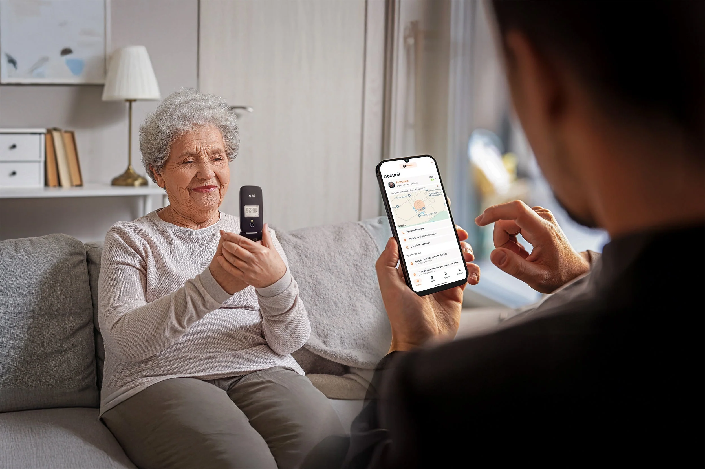

Réduire la fracture numérique : SPC Polaris,une technologie pensée pour les seniors et leurs proches
Écrit par le staff de Robotech – 3 mai 2025
C’est toujours un plaisir de parler d’innovations qui ont une portée sociale et humaine. Dans cette logique, certaines avancées technologiques méritent d’être soulignées non pour leur performance brute, mais pour leur capacité à répondre à un besoin réel et profond. C’est le cas de SPC Care, une application imaginée pour accompagner les personnes âgées dans leur rapport au numérique, tout en apportant à leurs proches des outils concrets pour veiller sur elles à distance.
SPC Care : Accompagner les seniors tout en préservant leur autonomie
Alors que la fracture numérique continue de se creuser chez les seniors, avec près de 35 % des 60-69 ans qui affirmaient en 2023 ne pas maîtriser les outils numériques (contre 25 % trois ans plus tôt), les plus de 70 ans restent les plus concernés par cette exclusion technologique. L’application SPC Care a été conçue pour répondre à cette problématique. Elle permet à un proche de prendre la main à distance sur le téléphone d’un senior, sans que ce dernier ait besoin d’une connexion Internet constante. L’idée n’est pas de retirer l’autonomie de l’utilisateur, mais de simplifier son expérience et de garantir sa sécurité. Depuis leur propre appareil, les aidants peuvent configurer le téléphone de leur proche, suivre sa localisation, ajuster des paramètres essentiels comme la luminosité, la taille des caractères ou le volume sonore, tout en recevant des alertes utiles : batterie faible, appels manqués, messages non lus ou déclenchement du bouton SOS. Le dispositif intègre aussi des fonctions de rappel pour les traitements médicaux ou les rendez-vous, ainsi qu’un système de protection contre les messages et appels indésirables.
Cette approche centrée sur l’assistance discrète mais efficace s’inscrit dans une volonté de rassurer les familles sans perturber les habitudes des utilisateurs. La gestion peut d’ailleurs être partagée entre plusieurs membres de la famille, facilitant une coordination plus souple et adaptée à chaque situation.
SPC POLARIS : Un téléphone mobile conçu pour les seniors
Pour soutenir cette initiative, SPC a également conçu un téléphone parfaitement adapté à l’usage de cette application : le SPC POLARIS. Il s’agit d’un modèle à clapet moderne, combinant simplicité d’utilisation et technologies récentes. L’appareil propose une ergonomie pensée pour les besoins des seniors, avec de larges touches, une interface claire, un écran externe indiquant les informations essentielles, et une compatibilité avec les appareils auditifs. Doté de la 4G et d’un GPS intégré, le téléphone assure une communication fluide et une localisation précise en cas de besoin. La touche SOS permet, en cas d’urgence, d’alerter automatiquement une liste de contacts de confiance. Le tout est soutenu par une autonomie solide et une station de recharge pratique, pensée pour que le téléphone soit toujours prêt à l’emploi.
Innover pour améliorer la qualité de vie
L’initiative SPC ne cherche pas à imposer une révolution technologique, mais plutôt à répondre avec justesse à un problème concret. En apportant une solution simple, lisible et utile, elle contribue à reconnecter une partie de la population trop souvent laissée à l’écart du progrès numérique. Dans un monde où la technologie évolue à toute vitesse, il est essentiel de ne pas oublier celles et ceux qui ont besoin d’un coup de main pour rester dans la course. SPC Care et le téléphone SPC POLARIS illustrent à merveille cette vision d’une innovation au service des liens humains.